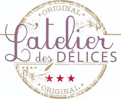

POUR VOTRE CORPS...
L'atelier des délices
Atelier des délices à conçu pour leurs clientes une gamme de soins innovante et originale.
Il allie des compositions naturelles et bio avec toutes les dernières technologies dans le respect de la qualité, de la personne et de l’environnement.
L’atelier des Délices a pour objectif de vous offrir le meilleur de l’intelligence végétale avec des textures agréables, pour un résultat prouvé. C’est une marque Bio, certifié par ECOCERT.
